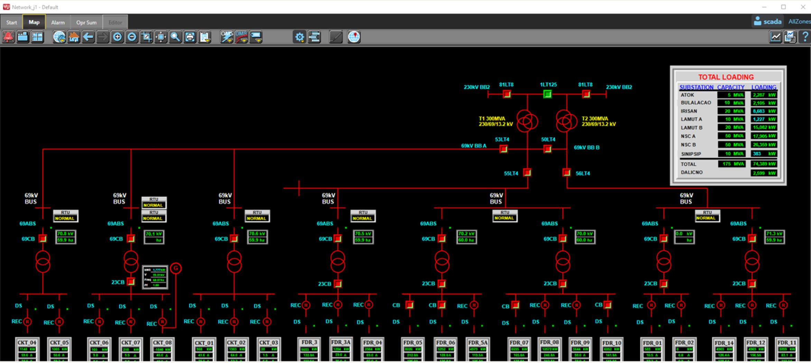

Projects
SCADA Modernization & Substation Modeling
Led the development of substation models for six (6) substations using detailed single-line diagrams (SLDs), incorporating protection devices, switching elements, and operational interlocks to support reliable monitoring and control. Established DNP3 communication over TCP/IP for field device integration, enabling scalable expansion for future phases such as Outage Management System (OMS) and Distribution Management System (DMS) readiness.

Tip: Add your Survalent screenshots, SLD slides, or commissioning photos into
assets/projects/scada/ and keep filenames consistent.
Utility GIS Development & Network Data Modernization
Spearheaded the evolution of the utility GIS program from CAD-based drawings through ESRI platforms (ArcView / ArcMap) and later migration to QGIS. Coordinated large-scale field data gathering and network updates, supporting accurate asset mapping for planning, operations, and system expansion. Managed and guided a team of approximately twenty (20) engineers dedicated to data collection, validation, and continuous GIS dataset improvement.


Tip: Put GIS screenshots, maps, before/after photos, or survey snapshots into
assets/projects/gis/.